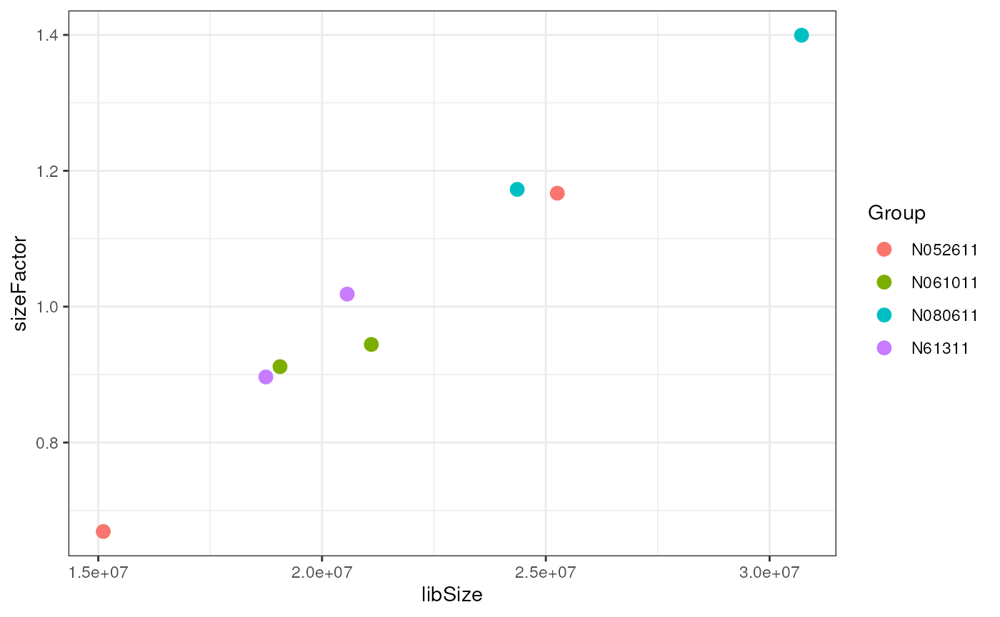
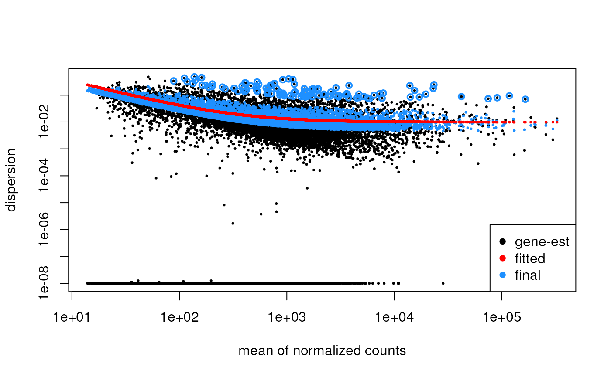
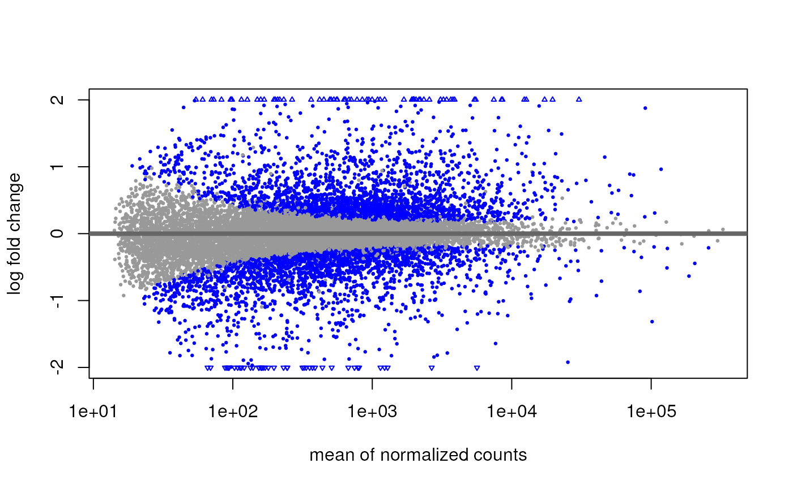
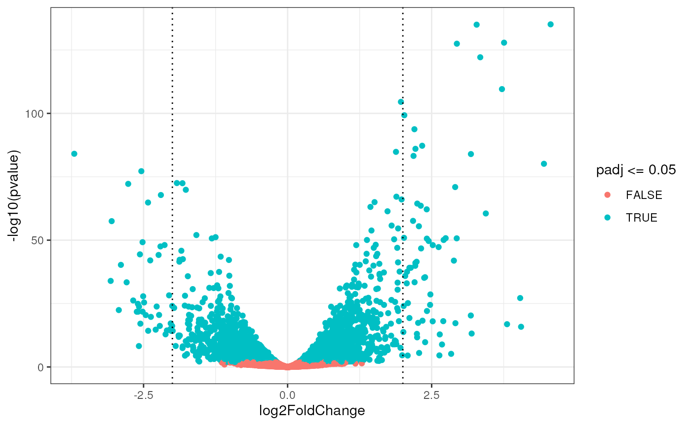

vignettes/differential_expression.Rmd
differential_expression.Rmd
data(airway)
filter <- filterByExpr(airway)## Warning in filterByExpr.DGEList(y, design = design, group = group, lib.size =
## lib.size, : All samples appear to belong to the same group.
table(filter)## filter
## FALSE TRUE
## 49453 14224
filtered <- airway[filter,]
filtered## class: RangedSummarizedExperiment
## dim: 14224 8
## metadata(1): ''
## assays(1): counts
## rownames(14224): ENSG00000000003 ENSG00000000419 ... ENSG00000273382
## ENSG00000273486
## rowData names(10): gene_id gene_name ... seq_coord_system symbol
## colnames(8): SRR1039508 SRR1039509 ... SRR1039520 SRR1039521
## colData names(9): SampleName cell ... Sample BioSample
dds <- DESeqDataSet(filtered,
design = ~ cell + dex)
dds## class: DESeqDataSet
## dim: 14224 8
## metadata(2): '' version
## assays(1): counts
## rownames(14224): ENSG00000000003 ENSG00000000419 ... ENSG00000273382
## ENSG00000273486
## rowData names(10): gene_id gene_name ... seq_coord_system symbol
## colnames(8): SRR1039508 SRR1039509 ... SRR1039520 SRR1039521
## colData names(9): SampleName cell ... Sample BioSample
class(dds)## [1] "DESeqDataSet"
## attr(,"package")
## [1] "DESeq2"
is(dds, "SummarizedExperiment")## [1] TRUE
dds <- estimateSizeFactors(dds)
ggplot(data.frame(libSize = colSums(assay(dds)),
sizeFactor = sizeFactors(dds),
Group = dds$cell),
aes(x = libSize, y = sizeFactor, col = Group)) +
geom_point(size = 3)
dds <- estimateDispersions(dds)## gene-wise dispersion estimates## mean-dispersion relationship## final dispersion estimates
plotDispEsts(dds)
dds <- nbinomWaldTest(dds)Note that the function DESeq() performs these three
steps automatically.
## log2 fold change (MLE): dex trt vs untrt
## Wald test p-value: dex trt vs untrt
## DataFrame with 14224 rows and 6 columns
## baseMean log2FoldChange lfcSE stat pvalue
## <numeric> <numeric> <numeric> <numeric> <numeric>
## ENSG00000000003 711.6507 -0.3916468 0.1002736 -3.905781 9.39217e-05
## ENSG00000000419 522.1894 0.1964258 0.1115943 1.760178 7.83776e-02
## ENSG00000000457 238.0809 0.0275546 0.1412405 0.195090 8.45322e-01
## ENSG00000000460 58.1603 -0.0998310 0.2799299 -0.356628 7.21370e-01
## ENSG00000000971 5837.3125 0.4159432 0.0891274 4.666837 3.05872e-06
## ... ... ... ... ... ...
## ENSG00000273329 43.7610 -0.2277364 0.292112 -0.7796191 0.435615
## ENSG00000273344 66.2977 0.0316459 0.273984 0.1155026 0.908047
## ENSG00000273373 25.9784 -0.0362499 0.363926 -0.0996078 0.920656
## ENSG00000273382 18.2479 -0.7414291 0.470279 -1.5765744 0.114893
## ENSG00000273486 15.5160 -0.1595433 0.473073 -0.3372490 0.735929
## padj
## <numeric>
## ENSG00000000003 6.94718e-04
## ENSG00000000419 1.94495e-01
## ENSG00000000457 9.20965e-01
## ENSG00000000460 8.48067e-01
## ENSG00000000971 3.15971e-05
## ... ...
## ENSG00000273329 0.633006
## ENSG00000273344 0.953245
## ENSG00000273373 0.959511
## ENSG00000273382 0.259486
## ENSG00000273486 0.855986
summary(res)##
## out of 14224 with nonzero total read count
## adjusted p-value < 0.1
## LFC > 0 (up) : 2441, 17%
## LFC < 0 (down) : 2194, 15%
## outliers [1] : 0, 0%
## low counts [2] : 0, 0%
## (mean count < 14)
## [1] see 'cooksCutoff' argument of ?results
## [2] see 'independentFiltering' argument of ?results## log2 fold change (MLE): dex trt vs untrt
## Wald test p-value: dex trt vs untrt
## DataFrame with 6 rows and 6 columns
## baseMean log2FoldChange lfcSE stat pvalue
## <numeric> <numeric> <numeric> <numeric> <numeric>
## ENSG00000152583 997.958 4.56442 0.184002 24.8063 7.66744e-136
## ENSG00000165995 495.667 3.28040 0.132306 24.7940 1.04119e-135
## ENSG00000101347 12714.667 3.75653 0.155699 24.1268 1.30789e-128
## ENSG00000120129 3413.120 2.93737 0.121942 24.0882 3.32352e-128
## ENSG00000189221 2343.870 3.34320 0.141829 23.5721 7.45395e-123
## ENSG00000211445 12298.969 3.71989 0.166701 22.3147 2.65795e-110
## padj
## <numeric>
## ENSG00000152583 7.40494e-132
## ENSG00000165995 7.40494e-132
## ENSG00000101347 6.20115e-125
## ENSG00000120129 1.18184e-124
## ENSG00000189221 2.12050e-119
## ENSG00000211445 6.30111e-107
DESeq2::plotMA(res)
ggplot(as.data.frame(res),
aes(x = log2FoldChange, y = -log10(pvalue), color = padj<=0.05)) +
geom_point() +
geom_vline(xintercept = c(-2, 2), linetype = "dotted")
vsd <- vst(dds, blind = TRUE)
# Get top DE genes
genes <- res[order(res$pvalue), ] |>
head(30) |>
rownames()
heatmapData <- assay(vsd)[genes, ]
# Scale counts for visualization
heatmapData <- t(scale(t(heatmapData)))
# Add annotation
heatmapColAnnot <- data.frame(colData(vsd)[, c("cell", "dex")])
heatmapColAnnot <- HeatmapAnnotation(df = heatmapColAnnot)
# Plot as heatmap
ComplexHeatmap::Heatmap(heatmapData,
top_annotation = heatmapColAnnot,
cluster_rows = TRUE, cluster_columns = TRUE)